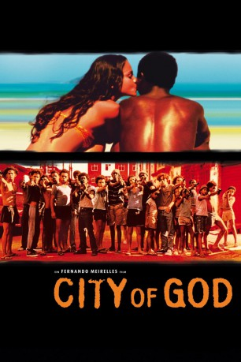

#576 City of God
Auszeichnungen: für 4 Oscars nominiert 1 BAFTA-Awards gewonnen
 
 IMDB-Wertung: 8.6 / 10
IMDB-Wertung: 8.6 / 10  IMDB-TOP-Platzierung: 22
IMDB-TOP-Platzierung: 22  Metascore: 79
Metascore: 79 
Brasilien in den 60ern: Das "Tender Trio" raubt Motels und Tankwagen aus. Die Jüngeren beobachten und lernen schnell - zu schnell. Etwa zehn Jahre später: Li`l Ze hat sich ausgebreitet, ihm gehört jetzt die ganze Stadt. Rivalisierende Banden werden ohne Gnade niedergemetzelt und vertrieben. Nur sein bester Freund Bene kann ihn einigermaßen zur Vernunft bringen. Buscapé will weder zu Li`l Ze noch zu einer der anderen Banden gehören, die in der "City Of God" herrschen. Er will sich nur seiner Fotografie widmen. Bis jetzt konnte er sich noch aus dem Wahnsinn heraushalten. Doch in den 80ern eskaliert die Situation zwischen den letzten beiden Gangs...
Jahr: 2002
Dauer: 130 Minuten
FSK: 16
Land: Brasilien Studio: Constantin FilmTonspuren:
Untertitel:
Auflösung: 1080p (1920x1040) Größe: 9502 MB
Genre: Krimi, Drama
Regisseur: Fernando Meirelles, Kátia Lund
Drehbuch: Paulo Lins, Bráulio Mantovani
Soundtrack: Ed Côrtes, Antonio Pinto
Darsteller:
- Alexandre Rodrigues als Buscapé - Rocket
- Leandro Firmino als Zé Pequeno - Li'l Zé
- Douglas Silva als Dadinho - Li'l Dice
- Jonathan Haagensen als Cabeleira - Shaggy
- Seu Jorge als Mané Galinha - Knockout Ned
- Alice Braga als Angélica
- Phellipe Haagensen als Bené - Benny
- Matheus Nachtergaele als Sandro Cenoura - Carrot
- Jefechander Suplino als Alicate - Clipper
- Emerson Gomes als Barbantinho - Stringy
- Edson Oliveira als Barbantinho Adulto - Older Stringy
- Michel de Souza als Bené Criança - Young Benny
- Roberta Rodrigues als Berenice - Bernice
- Luis Otávio als Buscapé Criança - Young Rocket
- Maurício Marques als Cabeção - Melonhead
- Gustavo Engrácia als Editor do Jornal - Rogerio Reis
- Darlan Cunha als Filé-com-Fritas - Steak and Fries
- Robson Rocha als Gelson - Gerson
- Thiago Martins als Lampião
- Leandra Miranda als Lúcia Maracanã
- Graziella Moretto als Marina Cintra
- Renato de Souza als Marreco - Goose
- Karina Falcão als Mulher do Paraíba - Shorty's Wife
- Sabrina Rosa als Namorada do Galinha - Knockout's Girlfriend
- Rubens Sabino als Neguinho - Blacky
- Marcos 'Kikito' Junqueira als Otávio
- Edson Montenegro als Pai Buscapé - Rocket's Father
- Gero Camilo als Paraíba - Shorty
- Felipe Silva als Rafael
- Daniel Zettel als Thiago - Tiago
- Charles Paraventi als Tio Sam - Uncle Sam
- Luiz Carlos Ribeiro Seixas als Touro
- Paulo 'Jacaré' César als Tuba
- Danielle Ornelas als Vizinha do Paraíba - Shorty's Neighbor
 Bernardo Santos als Caixa Baixa - Runts
Bernardo Santos als Caixa Baixa - Runts- Diego Batista als Caixa Baixa - Runts
- Diego Ferreira als Caixa Baixa - Runts
- Marcio Vinicios als Caixa Baixa - Runts
- Micael Borges als Caixa Baixa - Runts
- Rafael de Castro als Caixa Baixa - Runts
- Ramon Francisco als Caixa Baixa - Runts
- Thiago Wallace als Caixa Baixa - Runts
- Alexander Cerqueira als Bando Zé Pequeno - Li'l Zé's Gang
- Alexandre 'China' Tavares als Bando Zé Pequeno - Li'l Zé's Gang
- André Pires Martins als Bando Zé Pequeno - Li'l Zé's Gang
- António Rodrigues als Bando Zé Pequeno - Li'l Zé's Gang
- Bartolomeu Braga als Bando Zé Pequeno - Li'l Zé's Gang
- Carlos Henrique Avernas als Bando Zé Pequeno - Li'l Zé's Gang
- Cláudio César als Bando Zé Pequeno - Li'l Zé's Gang
- Cleiton Ventura als Bando Zé Pequeno - Li'l Zé's Gang
Datei: X:\2-Dilogie(A-F)\City of God\City of God (2002, FSK16, 1920x1040).mkv seit 11.03.2015
Festplatte: HD Collection-2(A-Z)-3(A-M)
 Alle Filme aus Gruppe '2-Dilogie(A-F)\City of God'
Alle Filme aus Gruppe '2-Dilogie(A-F)\City of God'